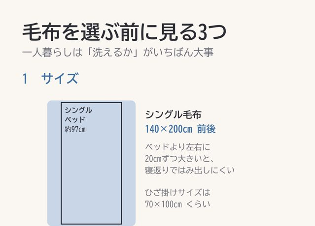
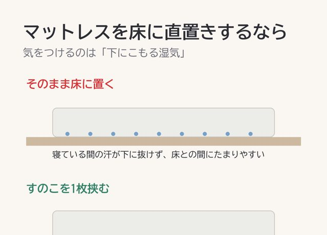

6畳・ワンルームの賃貸の部屋づくりを、寸法と図でまとめています。

6畳のラグ、何cmにするか問題
ラグって、色より先に大きさで失敗するんですよね。
ラグ
カーテンは、窓じゃなくてレールを測る
窓を測って買ったら、届いたカーテンが短かった。よくある失敗です。
カーテン
冬の布団が寒いとき、足すのは下から
布団が寒いと掛け布団を厚くしたくなるんですが、寒さは下から来ていることが多いんです。
寝具
毛布を選ぶなら、まず洗えるかどうか
毛布って種類が多くて、どれも暖かそうに見えるんですよね。
寝具
マットレスを床に直置きするなら、湿気だけは気にしておく
ベッドを置かないと、6畳でも床がかなり空きます。そのかわり気になるのが湿気です。
寝具
冬の窓際が寒いのは、冷気が落ちてくるから
窓の近くにいると、足元だけすうっと冷える。あれにはちゃんと理由があります。
冬支度
退去費用、どこまで払うのか
賃貸を出るときに気になるのが、どこまでが自分の負担になるのか、ですよね。
賃貸
電気毛布は、敷くか掛けるかで選ぶ
電気毛布って、敷くタイプと掛けるタイプがあるんですよね。
冬支度
6畳にこたつを置くなら、布団を広げた大きさで測る
こたつは天板の大きさで選びがちですが、場所をとるのは布団のほうなんです。
冬支度
加湿器は、窓と壁から離して部屋の真ん中寄りに
加湿器を窓のそばに置くと、朝、窓がびっしょりになることがあります。
冬支度